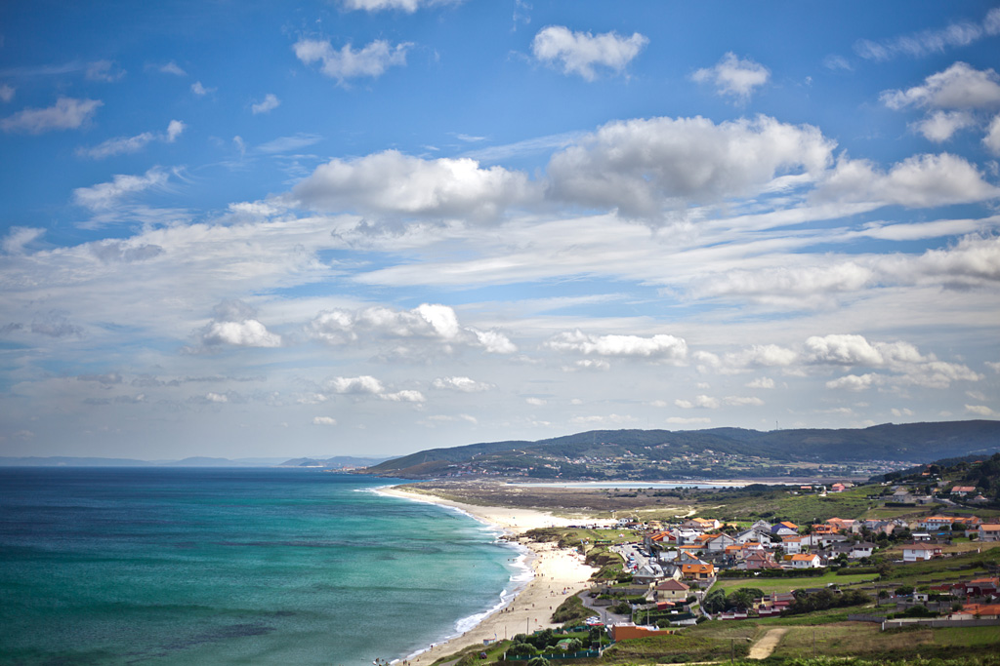
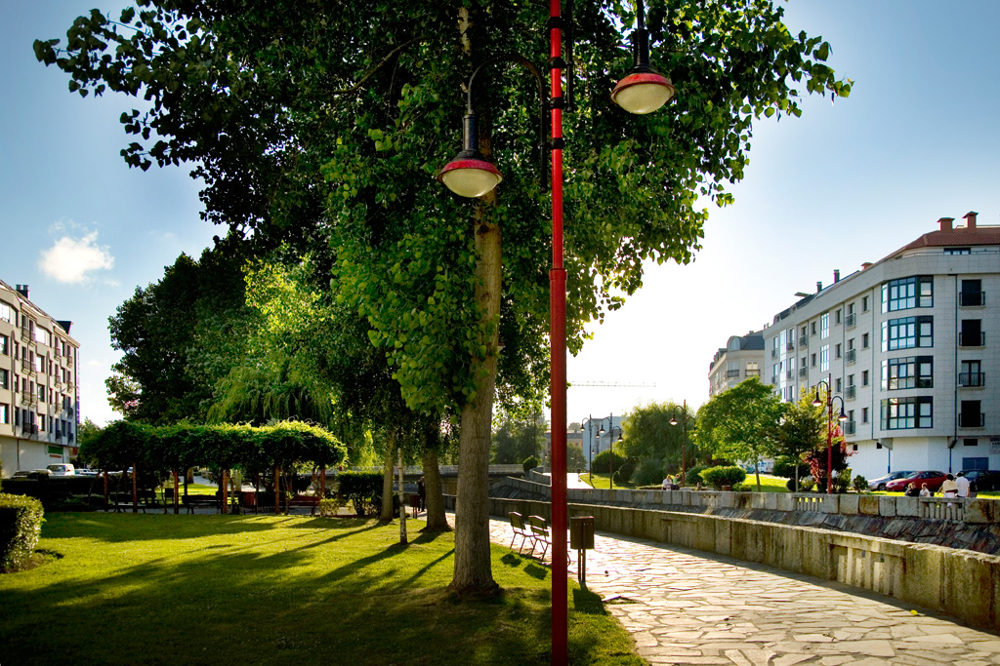
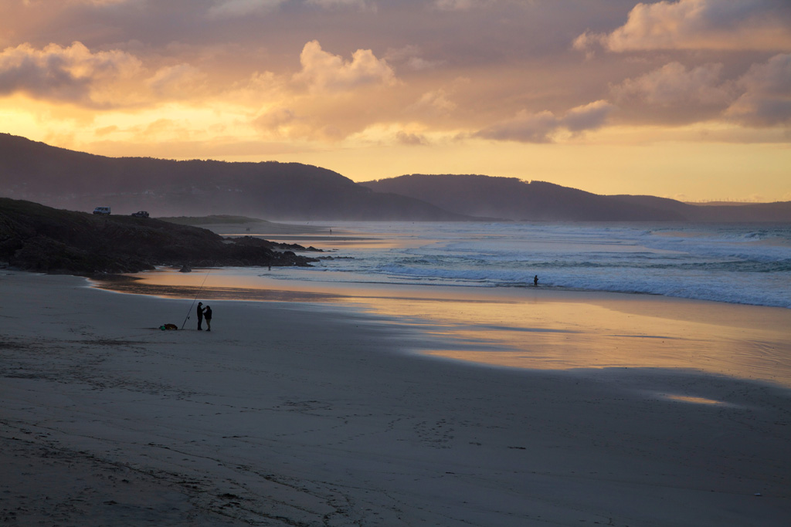
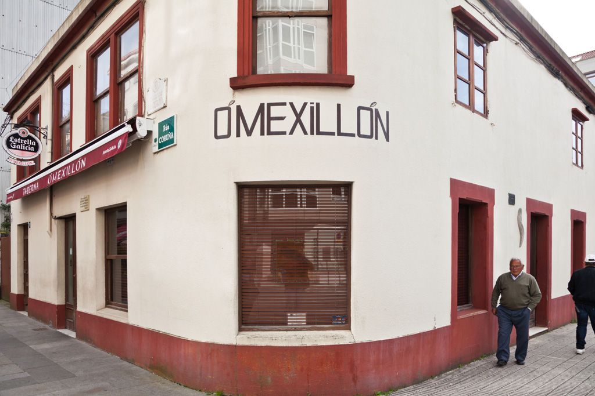
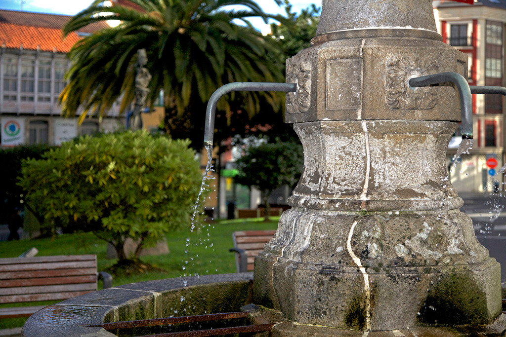

Playa de Razo-Baldaio, un rincón paradisíaco en la Costa da Morte

Playa de Razo, uno de los mejores lugares para surfear

Paseo do río Anllons, naturaleza y paz en cada rincón

Atardeceres inolvidables en la Costa da Morte

Casa natal de Alfredo Brañas, cuna de historia y cultura

Praza de Galicia, el corazón de Carballo

Praza de Galicia, el corazón de Carballo

Praza de Galicia, el corazón de Carballo
Utiliza los botones de siguiente y anterior para navegar por la galería.